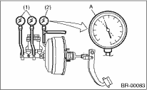

1. OPERATION CHECK (WITHOUT GAUGES)
CAUTION:
When checking operation, be sure to apply the parking brake securely.
• Check without gauges
This method can not determine exactly what part is defective. But it is possible to identify the outline of the defect by performing the check according to the following procedures.
• Air tightness check
Start the engine, and idle it for 1 to 2 minutes, then turn it OFF. Depress the brake pedal several times applying the normal pedal force. The pedal stroke should be the longest at the 1st depression, and it should become shorter at each successive depression. If the depressed pedal height is not changed, the brake booster is faulty.
|
(1) |
Normal operation |
|
(2) |
Not OK |
|
(3) |
1st |
|
(4) |
2nd |
|
(5) |
3rd |
NOTE:
• In case of defective operation, inspect the condition of the check valve and vacuum hose as well.
• Replace them if faulty, and perform the test again.
• If no improvement is observed, check precisely with gauges.
• Operation check
1. While the engine is OFF, depress the brake pedal several times applying the same pedal force, to check for a change in pedal height.
|
(1) |
When engine is stopped |
|
(2) |
When engine is started |
2. With the brake pedal depressed, start the engine.
3. As the engine starts, the brake pedal should move slowly toward the floor. If the pedal height does not change, the brake booster is faulty.
NOTE:
If faulty, check precisely with gauges.
• Loaded air tightness check
Depress the brake pedal while the engine is running, and turn the engine to OFF while the pedal is depressed. Keep the pedal depressed for 30 seconds. If the pedal height does not change, the function of brake booster is normal. If the pedal height increases, it is faulty.
NOTE:
If faulty, check precisely with gauges.
2. OPERATION CHECK (WITH GAUGE)
CAUTION:
When checking operation, be sure to apply the parking brake securely.
• Check with gauge
Connect the gauge as shown in the figure. After bleeding air from pressure gauge, perform each check.
|
(1) |
Pressure gauge |
|
(2) |
Vacuum gauge |
|
(3) |
Adapter hose |
|
(4) |
Vacuum hose |
|
(5) |
Pedal force gauge |
• Air tightness check
1. Start the engine and keep it running until vacuum pressure indicates point A of the vacuum gauge = 66.7 kPa (500 mmHg, 19.69 inHg). Do not depress the brake pedal at this time.

|
(1) |
Pressure gauge |
|
(2) |
Vacuum gauge |
2. Stop the engine and check the gauge. If the vacuum pressure drop within 15 seconds after stopping the engine is 3.3 kPa (25 mmHg, 0.98 inHg) or less, the function of brake booster is normal.
If faulty, the cause may be one of the following.
• Check valve malfunction
• Leak from vacuum hose
• Leak from shell joint section or stud bolt welded section
• Damaged diaphragm plate
• Leak from valve body seal and bearing section
• Leak from plate and seal assembly section
• Leak from poppet valve assembly section
• Loaded air tightness check
1. Start the engine and depress the brake pedal with a pedal force of 196 N (20 kgf, 44 lbf). Keep the engine idling until vacuum pressure indicates point B of gauge = 66.7 kPa (500 mmHg, 19.69 inHg) with the pedal depressed.
|
(1) |
Pressure gauge |
|
(2) |
Vacuum gauge |
|
(3) |
Pedal force gauge |
|
(4) |
Depressed |
2. Stop the engine and check the vacuum gauge.
If the vacuum pressure drop within 15 seconds after stopping the engine is 3.3 kPa (25 mmHg, 0.98 inHg) or less, the function of brake booster is normal.
If defective, refer to “AIR TIGHTNESS CHECK”.

3. If the brake booster is faulty, replace it with a new part.
• Lack of boost action check
Turn the engine OFF, and set the value of the vacuum gauge to “0”. Then, check the fluid pressure when the brake pedal is depressed. The pressure must be greater than the specification listed.
|
Brake pedal operation force |
147 N (15 kgf, 33 lbf) |
294 N (30 kgf, 66 lbf) | |
|
Europe/General |
Fluid pressure |
588 kPa (6 kgf/cm2, 85 psi) |
1,471 kPa (15 kgf/cm2, 213 psi) |
|
Australia |
588 kPa (6 kgf/cm2, 85 psi) |
1,667 kPa (17 kgf/cm2, 242 psi) |
• Boosting action check
Set the vacuum gauge reading to 66.7 kPa (500 mmHg, 19.69 inHg) with the engine running. Then, check the fluid pressure when the brake pedal is depressed. The pressure must be greater than the specification listed.
|
Brake pedal operation force |
147 N (15 kgf, 33 lbf) |
294 N (30 kgf, 66 lbf) | |
|
Europe/General |
Fluid pressure |
5,688 kPa (58 kgf/cm2, 825 psi) |
9,121 kPa (93 kgf/cm2, 1,322 psi) |
|
Australia |
6,374 kPa (65 kgf/cm2, 925 psi) |
10,199 kPa (104 kgf/cm2, 1,479 psi) |